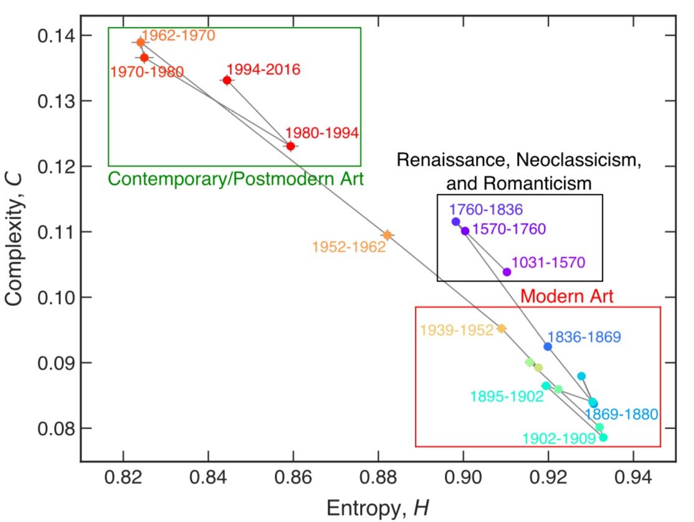
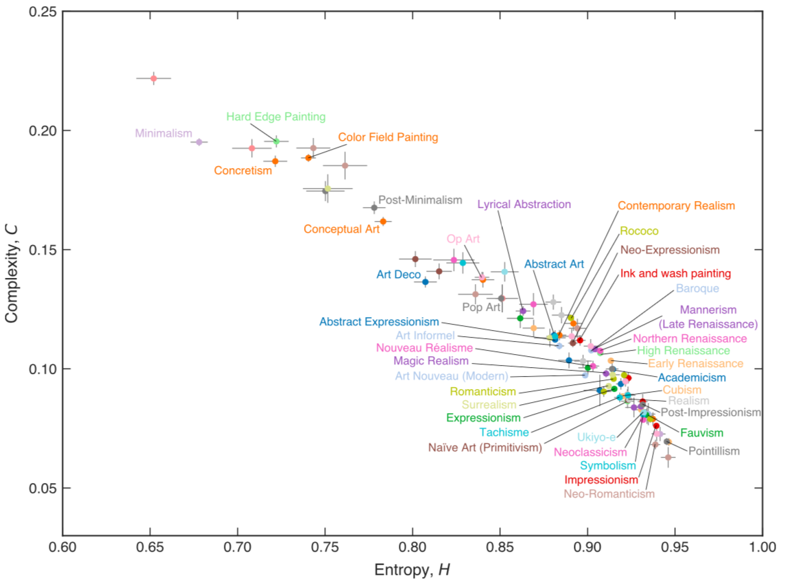
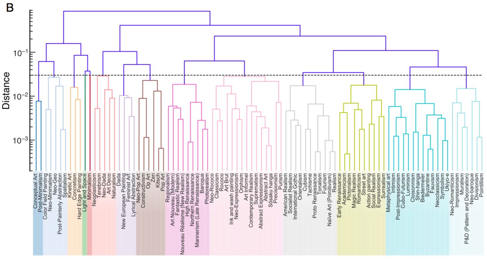
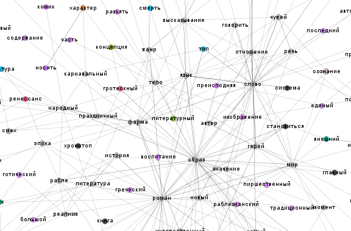

Тема седьмого «Вестника» вдохновлена журналом «Диалог. Карнавал. Хронотоп», последний номер в истории которого вышел несколькими днями ранее. Журнал был основан в 1992 году как специализированное издание, посвящённое жизни и творчеству М. М. Бахтина — знакового исследователя для современных цифровых гуманитариев филологической ориентации.
В журнале с первых лет его жизни существовала рубрика «поверх (научных) барьеров» — своеобразная трибуна для «неформатных» и/или междисциплинарных публикаций. Сожалея о закрытии журнала, мы одновременно радуемся тому, что сегодня вполне легитимизировало себя целое «безбарьерное» научное направление — Digital Humanities. Здесь ученым уже не нужно скакать «поверх барьеров» — ведь междисциплинарные препятствия изначально и осознанно удалены. А в последнем номере «Диалог. Карнавал. Хронотоп» опубликованы сразу два DH-исследования — и обзор одного из них мы с удовольствием публикуем в научной рубрике ниже.
Компьютерный анализ 137 тысяч картин из коллекции WikiArt. Каждое полотно представлено как набор пикселей. На основе цветовых параметров (RGB) вычисляются две метрики — визуальная сложность (complexity) и энтропия. Эти метрики соотносятся с наработками искусствоведов — шкалами «линейное <–> живописное» Генриха Вёльфлина и «гаптическое <–> оптическое» Алоиза Ригля.
Авторы исследования показывают, что при переходе к модерну у картин повышается энтропия и понижается сложность. Исследователи считают, что им удалось формализовать меньшую «предметность» и более вольный стиль полотен импрессионистов, фавистов и пуантилистов по сравнению с домодернистской живописью ренессанса, неоклассицизма и романтизма.
Как видно, при переходе от модерна к постмодерну/современному искусству сложность вновь повышается, а энтропия падает. Авторы видят здесь отражение того, что в современном искусстве часто изображают простые обыденные предметы с конкретными очертаниями.
На основе тех же признаков энтропии и сложности исследователи произвели иерархическую кластеризацию стилей:
Кроме того, они попытались обучить классификатор для предсказания стиля, однако точность (accuracy) его работы оказалась не слишком высокой (18% для 20 стилей).
Сетевой анализ терминологии М. М. Бахтина из последнего номера упомянутого выше журнала «Диалог. Карнавал. Хронтотоп». Сеть строится на основе совместной встречаемости всех относительно частотных слов в работах Бахтина. Далее к ней применяются стандартные методы network science: вычисление центральных узлов и выявление сообществ (кластеров). Анализ центральностей позволяет формально зафиксировать центр понятийной системы ученого через небольшой набор узловых терминов. Кластеризация сети помогает выявить отдельные концептуальные единства в корпусе работ Бахтина.
Статья о том, как маршруты древнеримских дорог по-прежнему определяют экономическое развитие в Европе. А в Северной Африке все сложилось иначе: после распада Римской империи там быстро вошли в силу те, кто возит грузы верблюжьими караванами. Им дороги были неактуальны, и потому сегодня никакой корреляции между уровнем развития и дорожной сеткой нет. В Европе же и в средние века продолжали подновлять старые пути, используя их как часть транспортной и торговой инфраструктуры.
В этой рубрике мы нескромно расскажем о популяризаторской деятельности сообщества «Системный Блокъ», в работе которого принимает участие Центр цифровых гуманитарных исследований НИУ ВШЭ. Как помнят постоянные читатели рассылки, «Системный Блокъ» был запущен вместе с выходом предыдущего «Вестника» в середине июля. Он задумывался как первое русское медиа с фокусом на цифровизации культуры и популяризации Digital Humanities.
С тех пор у сообщества появилось свыше 6000 подписчиков, были опубликованы почти четыре десятка постов, возникли некоторые фирменные рубрики. Так, под хэштегом #нейростихи машинную поэзию еженедельно комментирует живой кандидат филологических наук… Редакция сообщества живет «без барьеров»: сейчас над материалами работают цифровые гуманитарии из московской и петербургской Вышки, сотрудники ведущих отечественных IT-компаний, представители зарубежных исследовательских институтов, аналитики-урбанисты, педагоги-практики.
В ближайшее время «Системный Блокъ» стартует серию образовательных постов о том, как работают ключевые технологии и инструменты цифровых исследований. Пока же предлагаем небольшую подборку уже опубликованных материалов, которые могут помочь новичку (например, студенту):